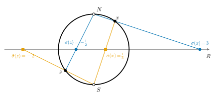
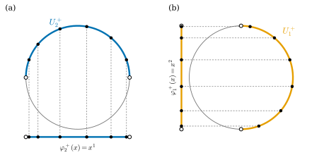

11.3 Spheres and Stereographic Projection
Goals
- 두 stereographic projection chart 사이의 transition map \(\tilde\sigma \circ \sigma^{-1}(u) = u/\abs{u}^2\)을 계산하고, 이것이 diffeomorphism임을 보여 \(S^n\)에 표준 smooth structure를 줄 수 있다.
- hemisphere를 그래프로 보는 chart(hemisphere charts)를 정의하고, hemisphere charts와 stereographic projection chart가 같은 smooth structure를 줌을 증명할 수 있다.
- \(S^1\)의 각 chart가 표준 구조에 속함을 보이고, \(S^n\)을 chart 하나로 덮을 수 없음을 증명할 수 있다.
Prerequisites
- Example 11.1.6 (sphere \(S^n\), 두 stereographic projection), Example 11.1.8 (그래프)
- Definition 11.2.1 (transition map과 smooth compatibility), Proposition 11.2.10 (smooth atlas가 정하는 구조)
- Example 3.2.14(c) (stereographic projection은 homeomorphism)
- Proposition 2.2.12 (\(C^k\)급 map의 연산), Example 2.3.11 (1변수 역함수)
Motivation
Section 11.2에서 smooth manifold를 정의했다. topological manifold 위에 smooth atlas를 하나 주면 된다(Proposition 11.2.10). \(\R^n\) 다음으로 살펴볼 예는 sphere \(S^n\)이다. Example 11.1.6에서 두 stereographic projection \(\sigma\)와 \(\tilde\sigma\)가 \(S^n\)을 덮는 chart임을 보였다. 남은 질문은 하나다. 두 chart가 겹치는 곳 \(S^n \setminus \{N, S\}\)에서 transition map이 smooth한가?
\(S^n\)은 \(\R^{n+1}\) 안에 놓여 있으므로 “당연히 smooth한 것 아닌가”라고 생각할 수 있다. 그러나 Section 11.2의 정의는 둘러싼 공간을 전혀 쓰지 않는다. \(S^n\)의 smooth structure는 chart와 transition map만으로 정해지므로 직접 계산해야 한다. 이 절에서는 그 계산을 하고, hemisphere를 그래프로 보는 또 다른 chart들이 같은 구조를 준다는 것도 확인한다. \(S^n\)을 \(\R^{n+1}\)의 submanifold로 보는 관점은 Chapter 14에서 다시 만난다.

The Stereographic Projection Atlas
\(\sigma\)와 \(\tilde\sigma\)의 식을 상기하자((3.2.4), (11.1.1)). \(x = (x', x^{n+1})\), \(x' = (x^1, \dots, x^n)\)으로 쓰면
이다. 여기서 \((2u,\ \abs{u}^2 - 1)\)은 \((2u^1, \dots, 2u^n,\ \abs{u}^2 - 1) \in \R^{n+1}\)을 줄여 쓴 것이다.
Proposition 11.3.1 (stereographic projection의 transition map). \(n \ge 1\)이라 하자. 두 chart \((S^n \setminus \{N\}, \sigma)\)와 \((S^n \setminus \{S\}, \tilde\sigma)\)가 겹치는 곳의 image는 \(\sigma(S^n \setminus \{N, S\}) = \tilde\sigma(S^n \setminus \{N, S\}) = \R^n \setminus \{0\}\)이고, 두 transition map은
이다(\(u, v \in \R^n \setminus \{0\}\)). 이 map \(I(u) = u/\abs{u}^2\)은 \(\R^n \setminus \{0\}\)의 diffeomorphism이고 \(I \circ I = \id\)이다. 따라서 \(\{(S^n \setminus \{N\}, \sigma),\ (S^n \setminus \{S\}, \tilde\sigma)\}\)는 \(S^n\)의 smooth atlas다.
Proof idea: \(\sigma^{-1}(u)\)의 성분을 \(\tilde\sigma\)의 식에 그대로 넣는다. 분모 \(1 + x^{n+1}\)이 \(2\abs{u}^2/(\abs{u}^2 + 1)\)이 되어 깔끔하게 약분된다.
Proof. 겹치는 곳. 두 정의역의 교집합은 \(S^n \setminus \{N, S\}\)이다. \(\sigma\)는 \(S^n \setminus \{N\}\)에서 \(\R^n\) 위로 가는 bijective이고 \(\sigma(S) = 0/(1 + 1) = 0\)이므로 \(\sigma(S^n \setminus \{N, S\}) = \R^n \setminus \{0\}\)이다. 같은 이유로 \(\tilde\sigma(N) = 0\)이므로 \(\tilde\sigma(S^n \setminus \{N, S\}) = \R^n \setminus \{0\}\)이다.
첫째 transition map. \(u \ne 0\)이고 \(x = \sigma^{-1}(u)\)라 하자. (11.3.1)에서 \(x' = 2u/(\abs{u}^2 + 1)\), \(x^{n+1} = (\abs{u}^2 - 1)/(\abs{u}^2 + 1)\)이므로
이다. \(u \ne 0\)이면 이 값은 양수다. 따라서
이다. 둘째 transition map. \(v \ne 0\)이고 \(y = \tilde\sigma^{-1}(v)\)이면 \(y' = 2v/(\abs{v}^2 + 1)\), \(y^{n+1} = (1 - \abs{v}^2)/(\abs{v}^2 + 1)\)이므로 \(1 - y^{n+1} = 2\abs{v}^2/(\abs{v}^2 + 1)\)이고, 같은 약분으로 \(\sigma(\tilde\sigma^{-1}(v)) = v/\abs{v}^2\)이다.
diffeomorphism. \(I(u) = u/\abs{u}^2\)의 성분 \(u^i/\big((u^1)^2 + \dots + (u^n)^2\big)\)은 분모가 \(\R^n \setminus \{0\}\)에서 \(0\)이 아닌 다항식의 몫이므로 매끄럽다(Proposition 2.2.12). \(\abs{I(u)} = 1/\abs{u}\)이므로 \(I(u) \ne 0\)이고 \(I(I(u)) = \dfrac{u/\abs{u}^2}{1/\abs{u}^2} = u\)이다. 따라서 \(I\)는 smooth inverse map \(I\) 자신을 가지는 bijective, 즉 diffeomorphism이다. 두 chart가 smoothly compatible이고 정의역이 \(S^n\)을 덮으므로 smooth atlas다.
Verification: verify/v-11-3-spheres-stereographic.py
Definition 11.3.2 (\(S^n\)의 표준 smooth structure). \(n \ge 1\)일 때 smooth atlas \(\{(S^n \setminus \{N\}, \sigma),\ (S^n \setminus \{S\}, \tilde\sigma)\}\)가 정하는 smooth structure(Proposition 11.2.10(b))를 \(S^n\)의 표준 smooth structure라 한다. 따로 말하지 않으면 \(S^n\)에는 이 구조를 준다.
\(n = 1\)이면 (11.3.2)는 \(u \mapsto 1/u\)이다. 이것은 \(\RP^1\)의 두 chart 사이의 관계 \(\varphi_2 = 1/\varphi_1\)(Example 3.4.16)과 같은 꼴이다. \(\RP^1\)과 \(S^1\)이 homeomorphic이라는 사실(Exercise 11.1.6)을 떠올리면 우연이 아니다. transition map의 모양을 좀 더 자세히 보자.
Example 11.3.3 (inversion의 Jacobian matrix). \(I(u) = u/\abs{u}^2\)의 partial derivative를 구하자. \(\rho = \abs{u}^2 = \sum_k (u^k)^2\)으로 두면 \(\partial_j\rho = 2u^j\)이고, 몫의 미분법에서
이다(\(\delta^i_j\)는 Kronecker delta). 즉 \(DI(u) = \abs{u}^{-2}\big(I_n - 2\hat u\hat u^{\mathsf T}\big)\), \(\hat u = u/\abs{u}\)이다(\(I_n\)은 \(n \times n\) identity matrix다. 이 절에서는 \(I\)가 inversion이므로 identity matrix는 반드시 \(I_n\)으로 쓴다). \(n = 2\)이고 \(u = (a, b)\)로 쓰면 성분으로
이고, determinant는 \(\dfrac{-(a^2 - b^2)^2 - 4a^2b^2}{(a^2 + b^2)^4} = -\dfrac{(a^2 + b^2)^2}{(a^2 + b^2)^4} = -\dfrac{1}{\abs{u}^4}\)이다. 일반적으로 \(I_n - 2\hat u\hat u^{\mathsf T}\)는 \(\hat u\)에 수직인 hyperplane에 대한 반사이므로 eigenvalue가 \(-1\) 하나와 \(1\) \((n-1)\)개이고, \(\det DI(u) = -\abs{u}^{-2n}\)이다(Exercise 11.3.6). determinant가 \(0\)이 아니라는 것은 Proposition 11.3.1과 맞고(Proposition 2.3.4), 음수라는 것은 두 stereographic projection이 “방향을 반대로 준다”는 뜻이다. 이 부호의 의미는 Chapter 18에서 방향을 다룰 때 다시 본다.
Verification: verify/v-11-3-spheres-stereographic.py
Hemisphere Charts
stereographic projection은 \(S^n\)을 chart 두 개로 덮는 경제적인 방법이다. 반면 hemisphere charts는 chart가 더 많이 필요하지만 식이 단순하다. 한 좌표를 버리기만 하면 된다.
Example 11.3.4 (hemisphere charts). \(i = 1, \dots, n+1\)에 대하여 열린 hemisphere \(U_i^+ = \{x \in S^n : x^i \gt 0\}\), \(U_i^- = \{x \in S^n : x^i \lt 0\}\)과 map
를 생각하자(\(\varphi_i^\pm\colon U_i^\pm \to B^n\), \((\varphi_i^\pm)^{-1}\colon B^n \to U_i^\pm\)). 여기서 \(B^n = B_1(0) \subseteq \R^n\)이고 모자는 그 성분을 뺀다는 뜻이다. \(U_i^\pm\)는 연속함수 \(x \mapsto x^i\)에 의한 열린 반직선의 preimage이므로 \(S^n\)에서 열려 있다.
\(U_i^\pm\)는 그래프다. 좌표의 순서를 바꾸면 \(U_i^\pm\)는 \(B^n\) 위의 연속함수 \(w \mapsto \pm\sqrt{1 - \abs{w}^2}\)의 그래프이고, \(\varphi_i^\pm\)는 그 그래프에서 정의역으로 가는 projection이다. 그러므로 Example 11.1.8과 같은 이유로 \(\varphi_i^\pm\)는 homeomorphism이고 inverse map은 (11.3.7)의 둘째 식이다. 실제로 \(w \in B^n\)이면 \(1 - \abs{w}^2 \gt 0\)이고, \((\varphi_i^\pm)^{-1}(w)\)의 길이의 제곱은 \(\abs{w}^2 + (1 - \abs{w}^2) = 1\)이며 \(i\)번째 성분의 부호가 \(\pm\)이다. \(S^n\)의 점은 어떤 성분이 \(0\)이 아니므로 \(2(n+1)\)개의 hemisphere가 \(S^n\)을 덮는다. 이 chart들을 hemisphere charts라 한다(Figure 11.3.2). \(n = 2\)이면 이 여섯 hemisphere는 Example 6.1.5에서 \(S^2\)를 regular surface로 덮은 여섯 그래프와 같고, 둘의 관계는 Section 11.6에서 다룬다.
Verification: verify/v-11-3-spheres-stereographic.py

Proposition 11.3.5 (hemisphere atlas). hemisphere charts \(2(n+1)\)개의 모임 \(\mathcal{A}_{\text{hemisphere}} = \{(U_i^\pm, \varphi_i^\pm)\}\)는 \(S^n\)의 smooth atlas다.
Proof idea: transition map은 “\(\pm\sqrt{1 - \abs{w}^2}\)를 끼워 넣고, 다른 성분 하나를 뺀다”이다. 끼워 넣기는 매끄럽고 빼기는 linear다.
Proof. \((U_i^\pm, \varphi_i^\pm)\)와 \((U_j^{\epsilon}, \varphi_j^{\epsilon})\) (\(\epsilon\)은 \(+\) 또는 \(-\))가 겹친다고 하자. \(\varphi_i^\pm(U_i^\pm \cap U_j^\epsilon)\)는 \(B^n\)의 open set이고(Section 11.2), 그 위에서
이다. 여기서 \(\mathrm{del}_j\colon \R^{n+1} \to \R^n\)은 \(j\)번째 성분을 빼는 linear map이다. \((\varphi_i^\pm)^{-1}\colon B^n \to \R^{n+1}\)은 매끄럽다. 성분이 coordinate functions \(w^k\)이거나 \(\pm\sqrt{1 - \abs{w}^2}\)인데, \(\sqrt{\ }\)은 \((0, \infty)\)에서 매끄럽고 \(B^n\)에서 \(1 - \abs{w}^2 \gt 0\)이므로 합성이 매끄럽다(Proposition 2.2.12(b)). linear map은 매끄러우므로 (11.3.8)은 매끄럽다. 두 chart의 역할을 바꾸면 역방향 transition map도 같은 꼴이므로 매끄럽다. 따라서 transition map은 diffeomorphism이다. \(i = j\)이고 부호가 다르면 \(U_i^+ \cap U_i^- = \varnothing\)이다.
예를 들어 \(S^1\)에서 \(U_1^+ \cap U_2^+\)는 제1사분면의 호이고, \(\varphi_1^+(U_1^+ \cap U_2^+) = (0, 1)\) 위에서 \(\varphi_2^+ \circ (\varphi_1^+)^{-1}(w) = \sqrt{1 - w^2}\)이다(Exercise 11.3.3). 이제 두 atlas가 같은 구조를 주는지 확인하자.
Theorem 11.3.6 (hemisphere charts와 stereographic projection chart는 같은 구조를 준다). \(n \ge 1\)이면 hemisphere charts는 모두 \(\sigma\), \(\tilde\sigma\)와 smoothly compatible. 따라서 \(\mathcal{A}_{\text{hemisphere}}\)가 정하는 smooth structure는 \(S^n\)의 표준 smooth structure와 같다.
이 정리가 말하는 것. \(S^n\)의 “smoothness”는 어느 chart로 계산하든 같다. stereographic projection으로 계산하기 편한 것은 stereographic projection으로, hemisphere charts로 계산하기 편한 것은 hemisphere charts로 계산해도 된다.
Proof idea: \(\sigma^{-1}\)과 \((\varphi_i^\pm)^{-1}\)은 \(\R^{n+1}\)으로 가는 smooth map이고, \(\sigma\)와 \(\varphi_i^\pm\)는 \(\R^{n+1}\)의 open set에서 정의된 smooth map을 \(S^n\)으로 제한한 것이다. transition map은 이런 map들의 합성이다.
Proof. \(\sigma\)와의 compatibility. 겹치는 곳은 \(U_i^\pm \setminus \{N\}\)이다. 한쪽 방향은 \(\varphi_i^\pm \circ \sigma^{-1} = \mathrm{del}_i \circ \sigma^{-1}\)이고, \(\sigma^{-1}\)은 성분의 분모 \(\abs{u}^2 + 1\)이 양수인 유리함수이므로 \(\R^n\) 전체에서 매끄럽다. 따라서 open set \(\sigma(U_i^\pm \setminus \{N\})\)에서 매끄럽다. 다른 방향은 \(\sigma \circ (\varphi_i^\pm)^{-1}\)이다. \(\sigma\)는 open set \(\{x \in \R^{n+1} : x^{n+1} \ne 1\}\)에서 정의된 smooth map \(x \mapsto x'/(1 - x^{n+1})\)을 제한한 것이므로, smooth map \((\varphi_i^\pm)^{-1}\)과의 합성은 open set \(\varphi_i^\pm(U_i^\pm \setminus \{N\})\)에서 매끄럽다. 식으로 쓰면 다음과 같다.
첫째 줄은 \(i \le n\)이면 \((\varphi_i^\pm)^{-1}(w)\)의 마지막 성분이 \(w^n\)이기 때문이다. \(i \le n\)이면 \(N \notin U_i^\pm\)(\(N\)의 \(i\)번째 성분이 \(0\))이므로 정의역은 \(B^n\) 전체이고, \(\abs{w} \lt 1\)이므로 분모 \(1 - w^n\)은 양수다. \(i = n+1\)이고 부호가 \(-\)이면 분모 \(1 + \sqrt{1 - \abs{w}^2}\)은 양수다. \(i = n+1\)이고 부호가 \(+\)이면 \(N \in U_{n+1}^+\), \(\varphi_{n+1}^+(N) = 0\)이므로 정의역은 \(B^n \setminus \{0\}\)이고, 거기서 \(\sqrt{1 - \abs{w}^2} \lt 1\)이어서 분모가 양수다.
\(\tilde\sigma\)와의 compatibility. antipodal map \(a(x) = -x\)를 쓴다. \(\tilde\sigma = (-\id) \circ \sigma \circ a\)이고(Example 11.1.6), \(\mathrm{del}_i\)가 linear이므로 \(y \in U_i^\mp\)에 대해 \(\varphi_i^\pm(a(y)) = -\varphi_i^\mp(y)\)이다. 따라서 겹치는 곳에서
\(\tilde\sigma \circ (\varphi_i^\pm)^{-1}(w) = -\sigma\big(-(\varphi_i^\pm)^{-1}(w)\big) = -\sigma \circ (\varphi_i^\mp)^{-1}(-w)\), \(\varphi_i^\pm \circ \tilde\sigma^{-1}(v) = -\varphi_i^\mp \circ \sigma^{-1}(-v)\)
이다. 오른쪽은 앞 문단의 smooth transition map과 \(\pm\id\)의 합성이므로 매끄럽다.
결론. hemisphere charts는 smooth atlas \(\{\sigma, \tilde\sigma\}\)의 모든 chart와 compatible이므로 표준 구조에 속한다(Proposition 11.2.10(b)). 즉 \(\mathcal{A}_{\text{hemisphere}} \cup \{\sigma, \tilde\sigma\}\)는 표준 구조의 부분집합이므로 smooth atlas이고, Proposition 11.2.10(c)에 의해 두 atlas는 같은 구조를 정한다.
Verification: verify/v-11-3-spheres-stereographic.py (\(n = 2\)의 모든 경우)
이 증명은 Proposition 11.3.1의 또 다른 증명을 준다. \(\sigma\)와 \(\tilde\sigma\)는 둘 다 smooth atlas \(\mathcal{A}_{\text{hemisphere}}\)의 모든 chart와 compatible이므로, Proposition 11.2.10(a)에 의해 서로 compatible이다. 직접 계산 (11.3.4)는 transition map이 구체적으로 무엇인지(inversion)까지 알려 준다는 점에서 더 많은 정보를 준다.
Angle Charts on the Circle \(S^1\)
\(S^1\)의 점은 흔히 각 \(t\)로 부른다. 이것도 표준 구조의 chart인지 확인하자. 처음 하는 계산이므로 단계를 모두 쓴다.
Example 11.3.7 (각 chart). \(e(t) = (\cos t, \sin t)\)를 \((-\pi, \pi)\)로 제한하면 \(S^1 \setminus \{(-1, 0)\}\) 위로 가는 연속 bijective다. inverse map은
이다(\(\alpha\colon S^1 \setminus \{(-1, 0)\} \to (-\pi, \pi)\)). 실제로 \(x = e(t)\)이면 \(\dfrac{\sin t}{1 + \cos t} = \dfrac{2\sin(t/2)\cos(t/2)}{2\cos^2(t/2)} = \tan\dfrac{t}{2}\)이고 \(t/2 \in (-\pi/2, \pi/2)\)이므로 \(2\arctan\tan(t/2) = t\)이다. \(1 + x^1 \gt 0\)인 곳에서 \(\alpha\)는 연속이므로 \(\alpha\)는 homeomorphism이고, \((S^1 \setminus \{(-1, 0)\}, \alpha)\)는 chart다.
\(\sigma\)와의 compatibility. 겹치는 곳은 \(S^1 \setminus \{(-1, 0), N\}\)이고 \(\alpha\)에 의한 image는 \((-\pi, \pi) \setminus \{\pi/2\}\)이다. 그 위에서 \(\sigma \circ \alpha^{-1}(t) = \sigma(\cos t, \sin t) = \cos t/(1 - \sin t)\)이다. 미분하면
이다(분자에서 \(\sin^2 t + \cos^2 t = 1\)을 썼다). 따라서 두 구간 \((-\pi, \pi/2)\), \((\pi/2, \pi)\) 각각에서 \(\sigma \circ \alpha^{-1}\)은 도함수가 \(0\)이 아닌 smooth function이고, Example 2.3.11에 의해 image 위로의 diffeomorphism이다. 즉 역방향 transition map \(\alpha \circ \sigma^{-1}\)도 매끄럽다.
\(\tilde\sigma\)와의 compatibility. 같은 방식으로 \((-\pi, \pi) \setminus \{-\pi/2\}\) 위에서 \(\tilde\sigma \circ \alpha^{-1}(t) = \cos t/(1 + \sin t)\)이고 도함수는 \(-1/(1 + \sin t) \lt 0\)이다.
\(\alpha\)가 smooth atlas \(\{\sigma, \tilde\sigma\}\)의 두 chart와 모두 compatible이므로 \(\alpha\)는 \(S^1\)의 표준 구조에 속한다. 덧붙여 \(\cos t \ne 0\)이면 \(\dfrac{\cos t}{1 - \sin t} = \dfrac{1 + \sin t}{\cos t}\)(분모·분자에 \(1 + \sin t\)를 곱함)이다. \(t = -\pi/2\)에서는 오른쪽 식이 정의되지 않으므로 왼쪽 식을 써야 한다.
Verification: verify/v-11-3-spheres-stereographic.py
Non-examples and Common Misconceptions
Non-example 11.3.8 (chart 하나로는 \(S^n\)을 덮을 수 없다). \(n \ge 1\)이면 \(S^n\) 전체를 정의역으로 하는 chart는 없다. 더 일반적으로, 공집합이 아닌 compact topological \(n\)-manifold \(M\) (\(n \ge 1\))은 chart 하나로 덮을 수 없다. \((M, \varphi)\)가 chart라 하자. \(\hat U = \varphi(M)\)은 compact 공간의 continuous image이므로 compact하고(Proposition 3.6.5(c)), Heine–Borel theorem(Theorem 3.6.7)에 의해 \(\R^n\)에서 닫혀 있고 bounded다. 한편 \(\hat U\)는 chart의 치역이므로 열려 있다. \(\R^n\)은 연결이므로(Example 3.7.10(a), Proposition 3.7.9) 열려 있으면서 닫혀 있는 공집합이 아닌 부분집합은 \(\R^n\) 자신뿐이다. 그러면 \(\hat U = \R^n\)인데, \(\R^n\)은 bounded가 아니므로 모순이다. \(S^n\)은 compact하므로(Example 3.6.8(a)) 여기에 해당한다. stereographic projection 두 개는 필요한 최소 개수다.
Non-example 11.3.9 (표준 구조에 속하지 않는 chart). \(c\colon \R^n \to \R^n\), \(c(u) = \abs{u}^2 u\)라 하자. \(n = 1\)이면 \(c(u) = u^3\)이다. \(c\)는 smooth bijective이고 inverse map \(c^{-1}(v) = v/\abs{v}^{2/3}\) (\(v \ne 0\)), \(c^{-1}(0) = 0\)은 연속이므로 homeomorphism이다. 따라서 \((S^n \setminus \{N\},\ c \circ \sigma)\)는 \(S^n\)의 chart다. 그러나 \(\sigma\)와의 transition map \(\sigma \circ (c \circ \sigma)^{-1} = c^{-1}\)은 원점에서 미분가능하지 않다. \(e_1\) 방향의 difference quotient가 \(\abs{c^{-1}(he_1)}/h = h^{1/3}/h \to \infty\) (\(h \to 0^+\))이기 때문이다. 그러므로 이 chart는 표준 구조에 속하지 않는다. Non-example 11.2.3의 \(x^3\) chart를 sphere에 옮긴 것이다.
Verification: verify/v-11-3-spheres-stereographic.py
Summary
- 두 stereographic projection의 transition map은 \(\R^n \setminus \{0\}\)의 inversion \(I(u) = u/\abs{u}^2\)이고, \(I\)는 자기 자신이 역인 diffeomorphism이다(Proposition 11.3.1). 이 atlas가 \(S^n\)의 표준 smooth structure를 정한다.
- \(\det DI(u) = -\abs{u}^{-2n} \ne 0\)이다. 음의 부호는 두 projection이 방향을 반대로 준다는 뜻이다(Chapter 18).
- hemisphere charts \(\varphi_i^\pm\)(한 좌표 버리기) \(2(n+1)\)개도 smooth atlas이고, stereographic projection과 같은 구조를 준다(Theorem 11.3.6).
- \(S^1\)의 각 chart \(\alpha\)는 표준 구조에 속한다. 반면 \(c \circ \sigma\), \(c(u) = \abs{u}^2u\)는 homeomorphism인 chart이지만 표준 구조에 속하지 않는다.
- 공집합이 아닌 compact manifold(dimension \(\ge 1\))는 chart 하나로 덮을 수 없다.
다음 절에서는 계산으로 확인하는 또 하나의 running example \(\RP^n\)의 transition map을 구하고, open submanifold, product manifold(torus \(T^n\)), 그래프, 행렬 공간 \(\GL(n, \R)\)처럼 일반적인 구성으로 smooth manifold를 만드는 방법을 모은다.
Exercises
Exercise 11.3.1 ★ Figure 11.3.1의 값을 확인하여라. 즉 \(S^1\)에서 \(x = (3/5, 4/5)\)와 \(z = (-4/5, -3/5)\)의 \(\sigma\), \(\tilde\sigma\) 값을 구하고 \(\sigma \cdot \tilde\sigma = 1\)임을 확인하여라.
Solution
\(n = 1\)이면 \(\sigma(x) = x^1/(1 - x^2)\), \(\tilde\sigma(x) = x^1/(1 + x^2)\)이다. \(x\): \(\sigma = (3/5)/(1/5) = 3\), \(\tilde\sigma = (3/5)/(9/5) = 1/3\). \(z\): \(\sigma = (-4/5)/(8/5) = -1/2\), \(\tilde\sigma = (-4/5)/(2/5) = -2\). 곱은 각각 \(1\)이다. 일반적으로 \(\sigma\tilde\sigma = (x^1)^2/(1 - (x^2)^2) = (x^1)^2/(x^1)^2 = 1\)이다(\(x^1 \ne 0\)일 때).
Verification: verify/v-11-3-spheres-stereographic.py
Exercise 11.3.2 ★ \(x = (2/3, 1/3, 2/3) \in S^2\)에 대하여 \(\sigma(x)\)와 \(\tilde\sigma(x)\)를 구하고, \(\tilde\sigma(x) = \sigma(x)/\abs{\sigma(x)}^2\)임을 확인하여라.
Solution
\(\abs{x}^2 = (4 + 1 + 4)/9 = 1\)이므로 \(x \in S^2\)이다. \(\sigma(x) = (2/3, 1/3)/(1 - 2/3) = (2, 1)\), \(\tilde\sigma(x) = (2/3, 1/3)/(1 + 2/3) = (2/5, 1/5)\)이다. \(\abs{\sigma(x)}^2 = 5\)이므로 \(\sigma(x)/\abs{\sigma(x)}^2 = (2/5, 1/5) = \tilde\sigma(x)\)이다.
Verification: verify/v-11-3-spheres-stereographic.py
Exercise 11.3.3 ★ (a) \(S^1\)에서 \(\varphi_2^+ \circ (\varphi_1^+)^{-1}\)의 정의역과 식을 구하여라. (b) \(S^2\)에서 \(\varphi_2^+ \circ (\varphi_1^+)^{-1}\)의 정의역과 식을 구하여라.
Solution
(a) \(U_1^+ \cap U_2^+ = \{x^1 \gt 0, x^2 \gt 0\}\)이고 \(\varphi_1^+(x) = x^2\)이므로 정의역은 \((0, 1)\)이다. \((\varphi_1^+)^{-1}(w) = (\sqrt{1 - w^2}, w)\)이고 \(\varphi_2^+\)는 둘째 성분을 버리므로 \(\varphi_2^+ \circ (\varphi_1^+)^{-1}(w) = \sqrt{1 - w^2}\)이다. 이 map은 \((0, 1)\)에서 \((0, 1)\) 위로 가는 diffeomorphism이고 자기 자신이 역이다.
(b) \((\varphi_1^+)^{-1}(w^1, w^2) = (\sqrt{1 - \abs{w}^2}, w^1, w^2)\)이고 \(U_2^+\)의 조건은 둘째 성분 \(w^1 \gt 0\)이다. 정의역은 \(\{w \in B^2 : w^1 \gt 0\}\)이고, 둘째 성분을 버리면 \(\varphi_2^+ \circ (\varphi_1^+)^{-1}(w) = (\sqrt{1 - \abs{w}^2},\ w^2)\)이다.
Verification: verify/v-11-3-spheres-stereographic.py
Exercise 11.3.4 ★ 참인지 거짓인지 판별하고 이유를 써라. (a) \(S^n \setminus \{N\}\)은 chart 하나로 덮인다. (b) \(\RP^n\) (\(n \ge 1\))은 chart 하나로 덮이지 않는다. (c) cylinder \(S^1 \times \R\)은 chart 하나로 덮이지 않는다.
Solution
(a) 참. \(\sigma\colon S^n \setminus \{N\} \to \R^n\)이 chart다. (b) 참. \(\RP^n\)은 공집합이 아닌 compact \(n\)-manifold이므로(Proposition 3.6.14) Non-example 11.3.8이 적용된다. (c) 거짓. Non-example 11.3.8은 compactness를 쓰므로 cylinder에는 적용되지 않고, 실제로 chart 하나로 덮인다. \(\chi(v, t) = e^t v\)는 \(S^1 \times \R\)에서 \(\R^2 \setminus \{0\}\) 위로 가는 homeomorphism이고(역은 \(u \mapsto (u/\abs{u},\ \log\abs{u})\), Exercise 11.1.7의 풀이), \(\R^2 \setminus \{0\}\)은 \(\R^2\)의 open set이다. 따라서 \((S^1 \times \R, \chi)\)가 전체를 덮는 chart다. 이 문항은 Non-example 11.3.8에서 compactness가 꼭 필요하다는 것을 확인하는 것이 목적이다.
Exercise 11.3.5 ★★ \(\beta\colon S^1 \setminus \{(1, 0)\} \to (0, 2\pi)\)를 \(t \mapsto (\cos t, \sin t)\), \(t \in (0, 2\pi)\)의 inverse map이라 하자. \(\beta\)가 chart이고 Example 11.3.7의 \(\alpha\)와 smoothly compatible임을 보여라. 또 \(\beta\)가 표준 구조에 속함을 보여라. \(\alpha\)와 compatible이라는 것만으로 이 결론이 나오는가? (Example 11.4.12에서 사용)
Solution
\(\beta\)는 \(\alpha\)를 회전시킨 것이다. \(x \in S^1 \setminus \{(1, 0)\}\)이면 \(-x \in S^1 \setminus \{(-1, 0)\}\)이고, \(x = (\cos t, \sin t)\) (\(t \in (0, 2\pi)\))이면 \(-x = (\cos(t - \pi), \sin(t - \pi))\), \(t - \pi \in (-\pi, \pi)\)이므로 \(\beta(x) = \alpha(-x) + \pi\)이다. 따라서 \(\beta\)는 homeomorphism의 합성으로 homeomorphism이다. 겹치는 곳은 \(S^1 \setminus \{(\pm 1, 0)\}\)이고 \(\beta\)에 의한 image는 \((0, \pi) \cup (\pi, 2\pi)\)이다. \(t \in (0, \pi)\)이면 \(\alpha(\beta^{-1}(t)) = t\)이고, \(t \in (\pi, 2\pi)\)이면 \(e(t) = e(t - 2\pi)\), \(t - 2\pi \in (-\pi, 0)\)이므로 \(\alpha(\beta^{-1}(t)) = t - 2\pi\)이다. 두 경우 모두 translation이므로 transition map과 그 역은 매끄럽다.
표준 구조에 속함. \(\alpha\)와 compatible이라는 것만으로는 결론이 나오지 않는다. \(\alpha\)의 정의역이 \(\beta\)의 정의역의 점 \((-1, 0)\)을 덮지 않기 때문이다(Section 11.2의 “compatibility는 transitive relation이 아니다” 상자). 그래서 smooth atlas \(\{\sigma, \tilde\sigma\}\)의 두 chart와의 compatibility를 직접 보인다. antipodal map을 \(a(x) = -x\)라 하면 앞 문단에서 \(\beta = \alpha \circ a + \pi\)이고, (11.3.1)에서 \(-\sigma^{-1}(u) = \tilde\sigma^{-1}(-u)\), \(-\tilde\sigma^{-1}(v) = \sigma^{-1}(-v)\), \(\sigma(-y) = -\tilde\sigma(y)\), \(\tilde\sigma(-y) = -\sigma(y)\)이다. 따라서 겹치는 곳에서
이다(\(\beta^{-1}(t) = -\alpha^{-1}(t - \pi)\)). 오른쪽은 Example 11.3.7에서 smoothness를 보인 transition map \(\alpha \circ \tilde\sigma^{-1}\), \(\alpha \circ \sigma^{-1}\), \(\tilde\sigma \circ \alpha^{-1}\), \(\sigma \circ \alpha^{-1}\)에 \(\pm\id\)와 translation을 합성한 것이므로 매끄럽다. 따라서 \(\beta\)는 \(\sigma\), \(\tilde\sigma\)와 모두 compatible이고, Proposition 11.2.10(b)에 의해 표준 구조에 속한다.
Verification: verify/v-11-3-spheres-stereographic.py
Exercise 11.3.6 ★★ \(n \ge 1\), \(u \ne 0\)일 때 \(\det DI(u) = -\abs{u}^{-2n}\)임을 보여라. (Example 11.3.3에서 사용)
Hint
\(R = I_n - 2\hat u\hat u^{\mathsf T}\)가 \(\hat u\)를 어디로 보내고, \(\hat u\)에 수직인 벡터를 어디로 보내는지 본다.
Solution
(11.3.5)에서 \(DI(u) = \abs{u}^{-2}R\), \(R = I_n - 2\hat u\hat u^{\mathsf T}\)이다. \(R\hat u = \hat u - 2\hat u(\hat u^{\mathsf T}\hat u) = -\hat u\)이고, \(\inner{w}{\hat u} = 0\)이면 \(Rw = w - 2\hat u\,\inner{\hat u}{w} = w\)이다. \(\hat u\)와 \(\hat u^\perp\)의 orthonormal basis를 합친 basis에서 \(R\)의 행렬은 \(\diag(-1, 1, \dots, 1)\)이므로 \(\det R = -1\)이다(determinant는 basis에 무관, Proposition 1.6.10). \(n \times n\) 행렬의 스칼라배는 \(\det(cA) = c^n\det A\)이므로 \(\det DI(u) = \abs{u}^{-2n} \cdot (-1)\)이다.
Verification: verify/v-11-3-spheres-stereographic.py (\(n = 1, 2, 3\))
Exercise 11.3.7 ★★★ \(p \in S^n\)이고 \(A\)가 \(Ap = N\)인 \((n+1) \times (n+1)\) orthogonal matrix라 하자. \(\sigma_p = \sigma \circ A\colon S^n \setminus \{p\} \to \R^n\)(“\(p\)에서의 stereographic projection”)이 표준 구조의 chart임을 보여라.
Hint
\(A\)는 \(S^n\)을 \(S^n\)으로 보내는 linear homeomorphism이다. \(\sigma \circ A \circ \sigma^{-1}\)을 \(\R^{n+1}\)에서 smooth map들의 합성으로 본다.
Solution
chart. \(A\)는 orthogonal matrix이므로 \(\abs{Ax} = \abs{x}\)이고, \(S^n\)에서 \(S^n\)으로 가는 bijective다(역은 \(A^{\mathsf T}\)). 성분이 일차식이므로 \(A\)와 \(A^{-1}\)은 연속이고, \(A(S^n \setminus \{p\}) = S^n \setminus \{N\}\)이다. 따라서 \(\sigma_p\)는 homeomorphism의 합성으로서 \(S^n \setminus \{p\}\)에서 \(\R^n\) 위로 가는 homeomorphism이다.
\(\sigma\)와의 compatibility. 겹치는 곳에서 \(\sigma_p \circ \sigma^{-1} = \sigma \circ A \circ \sigma^{-1}\)이다. \(\sigma^{-1}\colon \R^n \to \R^{n+1}\)은 매끄럽고, \(A\)는 linear이며, \(\sigma\)는 open set \(\{x^{n+1} \ne 1\}\)에서 smooth map의 제한이다. 정의역 \(\sigma(S^n \setminus \{N, A^{-1}N\})\)에서 \(A\sigma^{-1}(u) \ne N\)이므로 합성이 정의되고 매끄럽다(Proposition 2.2.12(b)). 역방향 \(\sigma \circ \sigma_p^{-1} = \sigma \circ A^{\mathsf T} \circ \sigma^{-1}\)도 같은 꼴이다.
\(\tilde\sigma\)와의 compatibility. \(\tilde\sigma^{-1}\colon \R^n \to \R^{n+1}\)도 매끄럽고 \(\tilde\sigma\)는 \(\{x^{n+1} \ne -1\}\)에서 smooth map의 제한이므로, \(\sigma \circ A \circ \tilde\sigma^{-1}\)과 \(\tilde\sigma \circ A^{\mathsf T} \circ \sigma^{-1}\)은 같은 이유로 매끄럽다. 따라서 \(\sigma_p\)는 표준 구조에 속한다. (\(A\)는 언제나 존재한다: \(p\)를 첫 벡터로 하는 orthonormal basis를 만들어(Theorem 1.5.10) \(p \mapsto N\)이 되게 배치하면 된다.)
Verification: verify/v-11-3-spheres-stereographic.py (회전 하나에 대한 기호 확인)